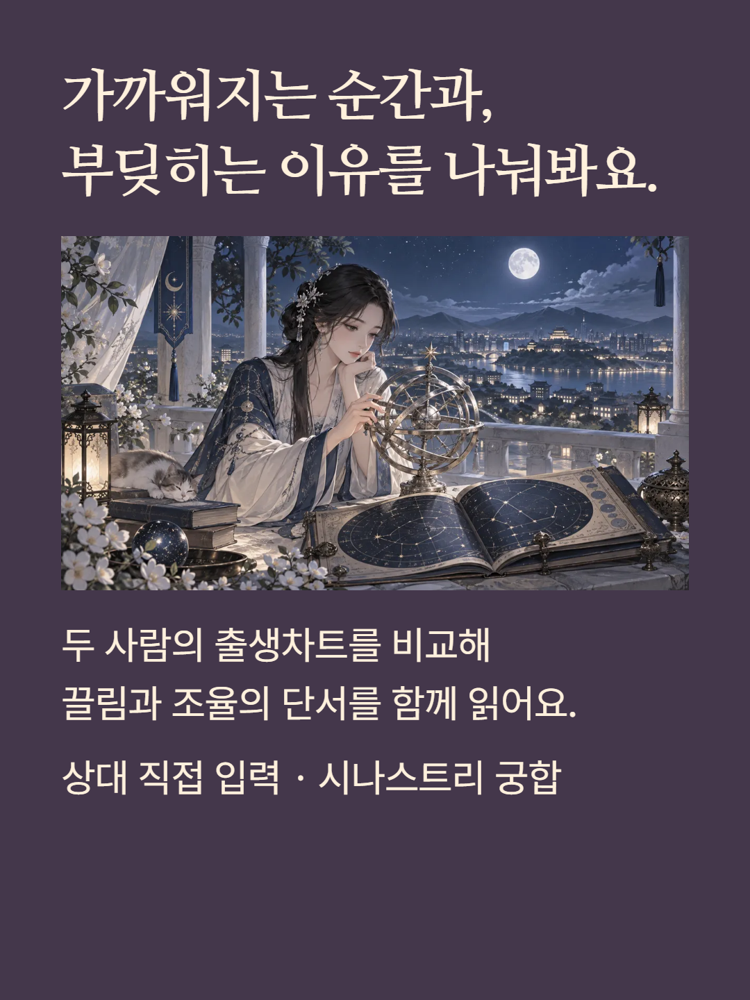
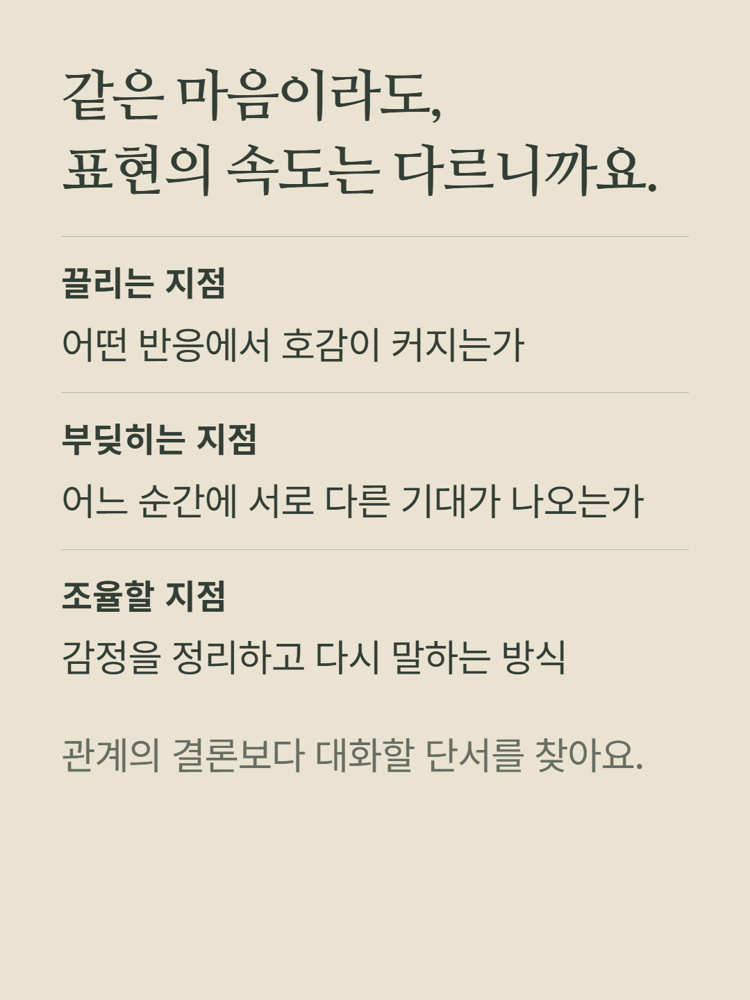
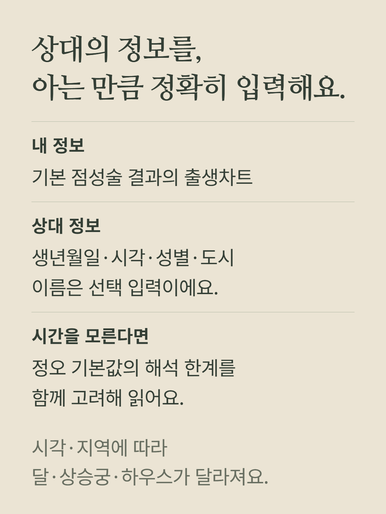
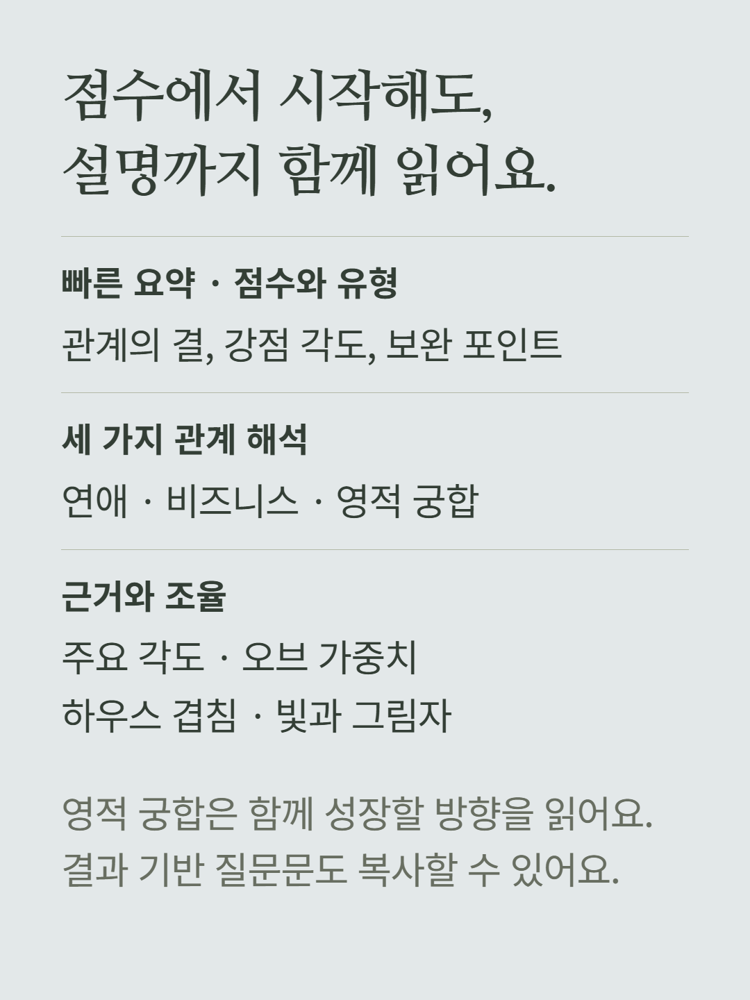
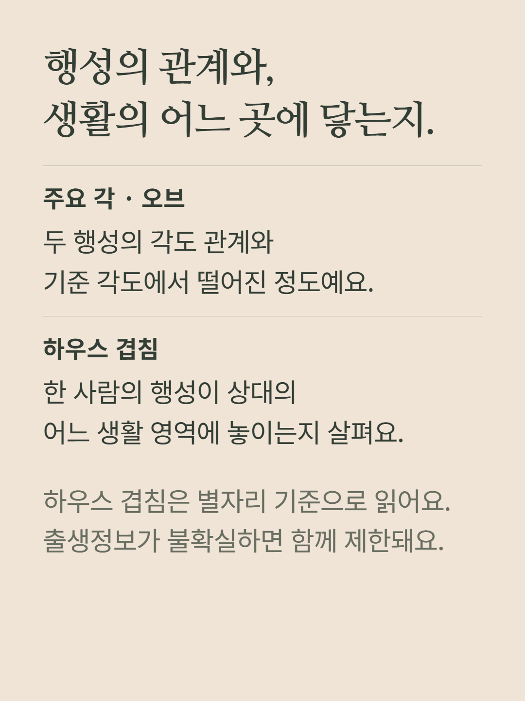
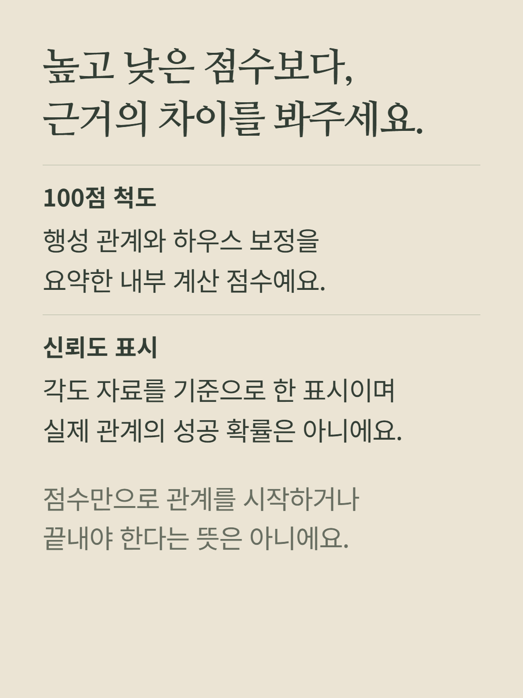
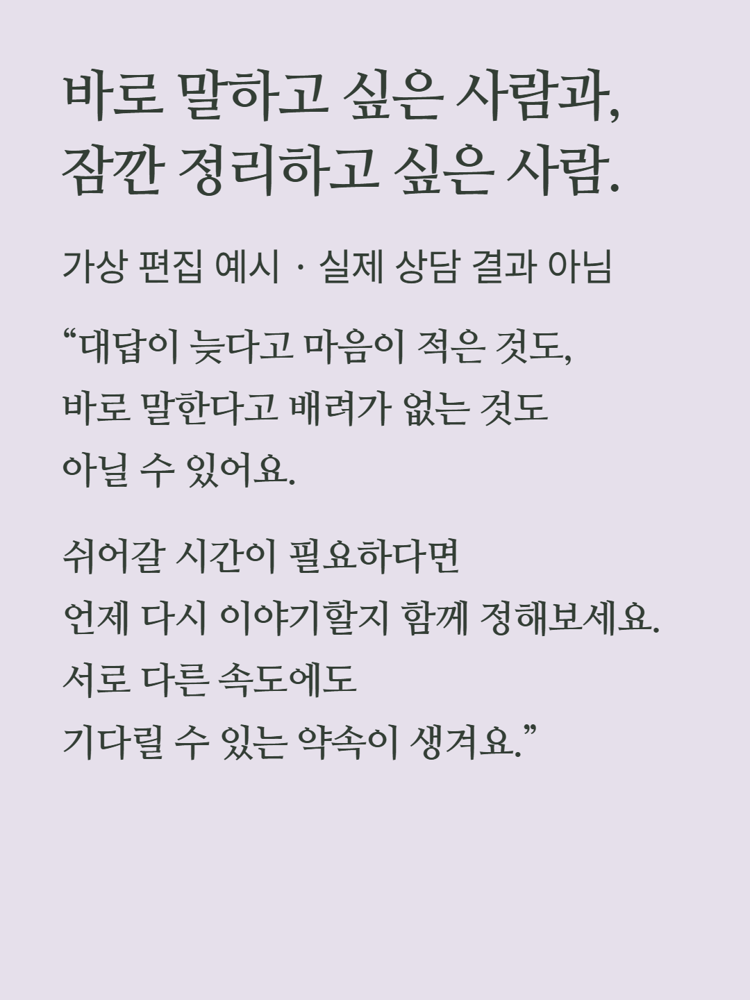
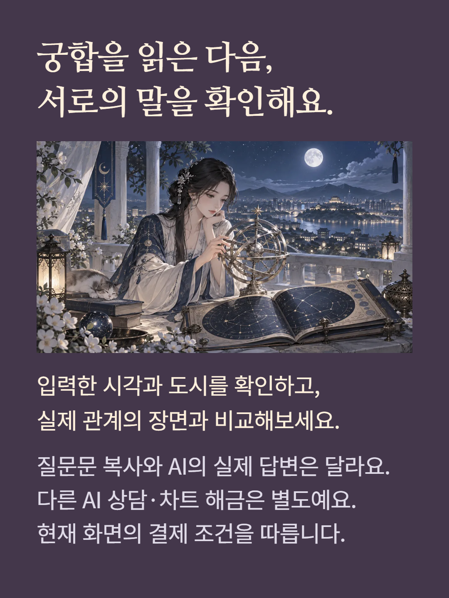

기본 점성술 차트와 직접 입력한 상대의 출생정보를 비교하는 개별 궁합 분석입니다. 태양·달·금성·화성의 주요 각과 오브, 별자리 기준 하우스 겹침으로 점수·관계 유형·연애/협업/성장 해석·빛과 그림자를 읽습니다. 시각 미입력은 정오 기본값을 사용하므로 달·상승궁·하우스 해석에 제한이 있습니다. 도시는 실제 출생지역을 선택해 주세요. 점수와 신뢰도 표시는 내부 계산 자료의 요약이며 관계 성공 확률이 아닙니다. 결과 기반 질문문 복사가 포함되지만 외부 AI의 답변이나 별도 질문 상담 구매를 포함하지 않습니다. 예시는 가상 편집이며 가격·결제 조건은 현재 화면을 따릅니다.